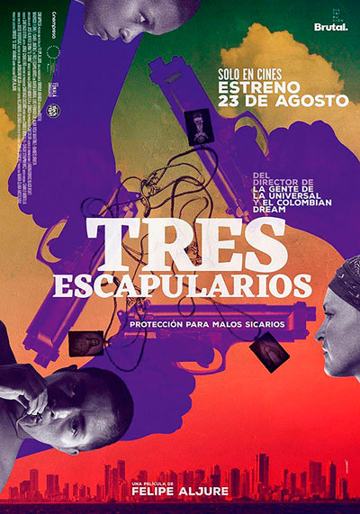
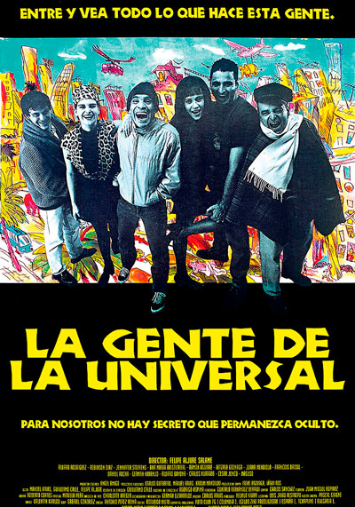

Felipe Aljure
Por: Jerrika Lozano
El girardoteño, gracias a su lenguaje cotidiano, pasión narrativa y calidad fotográfica, es uno de los referentes de la cinematografía colombiana de las ultimas tres décadas.
Aljure, que Estudió Art and Technique of Film Making en Londres, se ha caracterizado por presentar innovaciones técnicas y narrativas a través de películas como La gente de la universal, El colombian dream y Tres escapularios. También desarrolló su talento incursionando como director de series de televisión, docente universitario y en otros ámbitos culturales del país (fue el primer director de la Dirección de Cinematografía del Ministerio de Cultura y una pieza clave en el proceso de formulación de la Ley de Cine).
Recientemente asumió la Dirección Artística del Festival Internacional de Cine de Cartagena de Indias -FICCI-, para su edición 59. Sobre este nuevo reto explica que “lo primero que haremos es preservar el legado que el Festival ha construido en 58 ediciones y honrar la obra de Víctor, Mónica y Diana, que con sus gestiones lo han mantenido vigente y visibilizado. El FICCI siempre tendrá buen cine, invitados que nos aporten y reflexiones profundas sobre la coyuntura del séptimo arte colombiano, caribeño, latinoamericano y mundial.
Hay que leer el Festival de una manera congruente y acorde con la nueva generación; este espacio hay que defenderlo y evolucionarlo hacia donde lo indiquen los hechos sociales, tecnológicos y culturales del mundo, de modo que ir allí sea siempre una experiencia que nos enriquezca como personas, sin importar si somos cineastas, cinéfilos o simplemente amantes del cine”.
- 

- 
“Mi meta es plantear una reflexión a la no competencia; el cine es una fiesta, una celebración. Nosotros como especie no tenemos claro de dónde somos, de dónde venimos y cuál es nuestra función en la vida. El arte, a través de los años, ha logrado mantener vivas esas preguntas que nunca hemos respondido (y no estamos cerca de responder), por lo tanto, la competencia no está en mis planes: cada idea y visión expresada gracias al arte es válida”.
Así es Felipe Aljure, un visionario y amante del cine que dará gratas sorpresas en esta nueva faceta que, seguramente, llevará a cabo con el profesionalismo y entrega que lo caracterizan.